How to Navigate the Microsoft Sticky Notes App Settings (Windows 11)
This tutorial covers:
How to Switch Between Windows
How to Search For Sticky Notes
- How to Search for a Sticky Note Witih Click
- How to Clear the Search Bar
- How to Exit the Search Bar With Click
- How to Search for a Sticky Note With Keyboard Shortcut
- How to Clear the Search Bar With Keyboard Shortcut
How to Move to a Word
- How to Move One Word to the Left
- How to Move One Word to the Right
- How to Move to the Start of a Line
- How to Move to the End of a Line
- How to Move to the Start of a Sticky Note
- How to Move to the End of a Sticky Note
How to Move and Delete Words
No time to scroll down? Click through this tutorial slideshow:
Follow along this video tutorial:
How to Cycle Forward Through All Windows
- Step 1: First open the Notes List. Click the “New note” or “+” button to create one or more sticky notes. 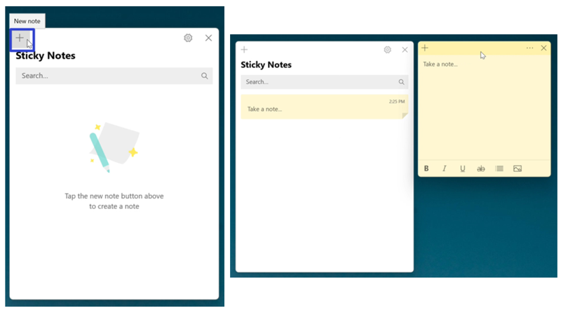
- Step 2: On the keyboard press Ctrl + Tab to cycle forward through all sticky notes and the Notes List window. 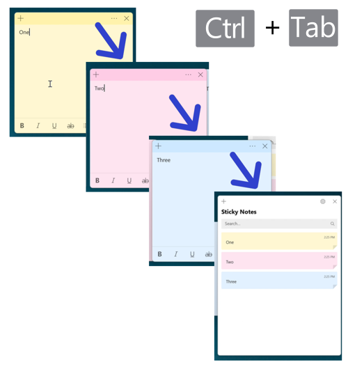
How to Cycle Backwards Through All Windows
- Step 1: Open the Notes List. Click the “New note” or “+” button to create one or more sticky notes.
- Step 2: On the keyboard press Ctrl + Shift + Tab to cycle backwards through all sticky notes and the Notes List window. 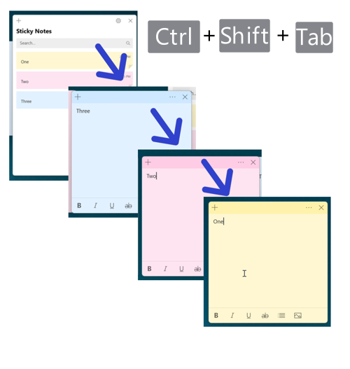
How to Search for a Sticky Note With Click
- Step 1: First open the Notes List. Click in the search bar and type any text. 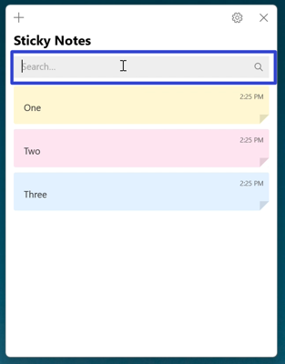
- Step 2: In the search results, double click a sticky note to open it. 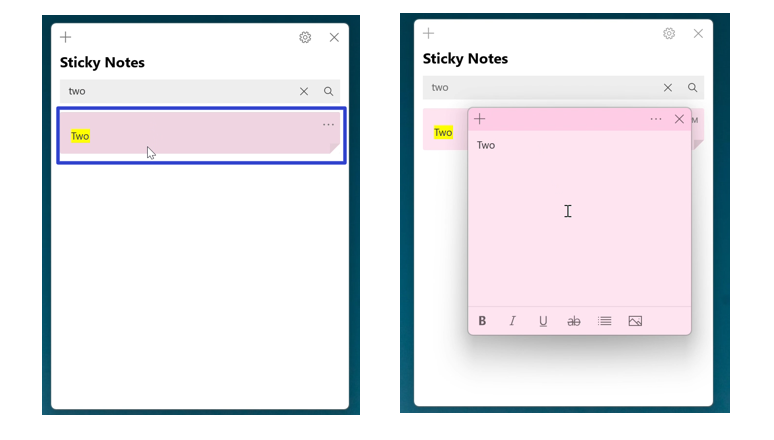
How to Clear the Search Bar
- Method 1: Click the “X” button on the right side of the search bar. 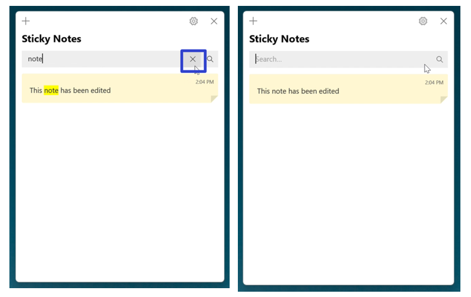
- Method 2: First click inside the search bar at the top of the Notes List, and on the keyboard press Backspace. 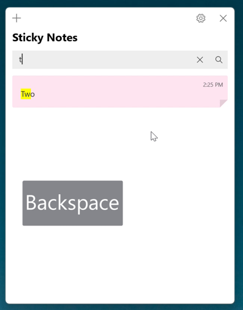
- Method 3: Select any text in the search bar of the Notes List, and on the keyboard press Delete. 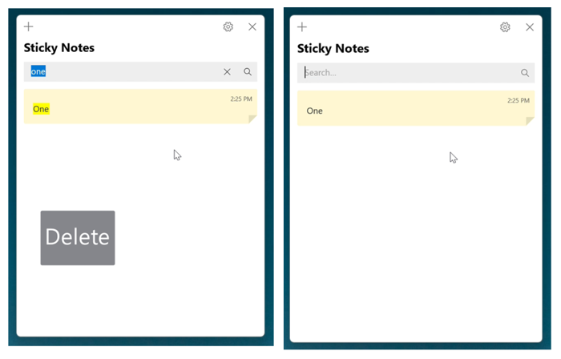
How to Exit the Search Bar With Click
- Step 1: Click anywhere inside the Notes List to exit the search bar. 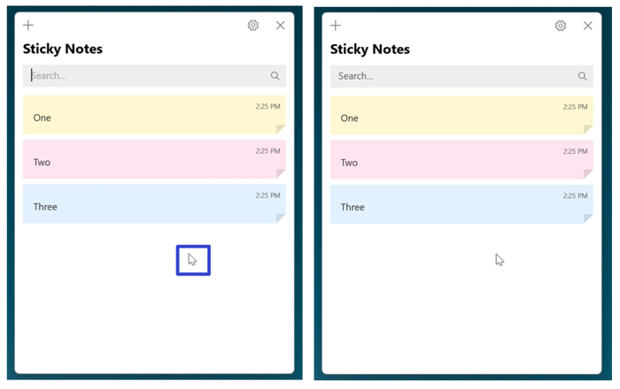
How to Search for a Sticky Note With Keyboard Shortcut
- Step 1: First open the Notes List. On the keyboard press Ctrl + F and type any text. 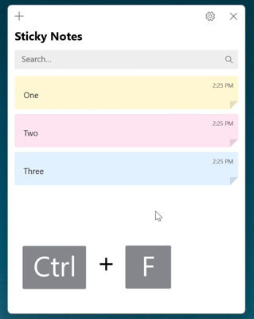
- Step 2: Press the Enter key twice to open the first sticky note in the search results list. 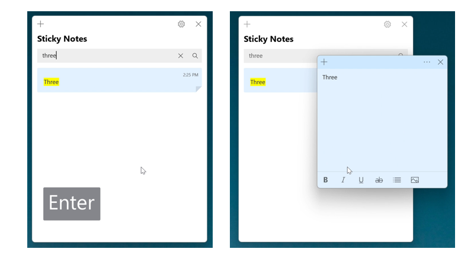
How to Clear the Search Bar With Keyboard Shortcut
- Step 1: Open the Notes List. On the keyboard press the Esc key. The Sticky Notes app clears all the search terms from the search bar. 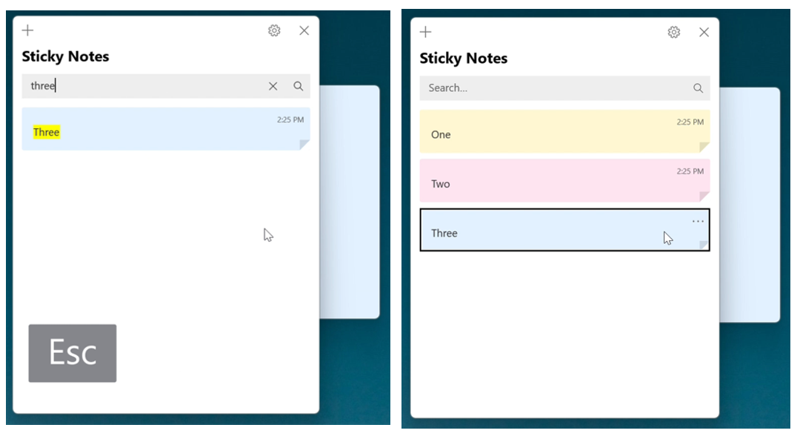
How to Move One Word to the Left
- Step 1: First edit a sticky note. On the keyboard press Ctrl + Left Arrow key to move the insertion point, or blinking vertical line, one word to the left. Continue pressing Ctrl + Left Arrow key to continue moving one word to the left. 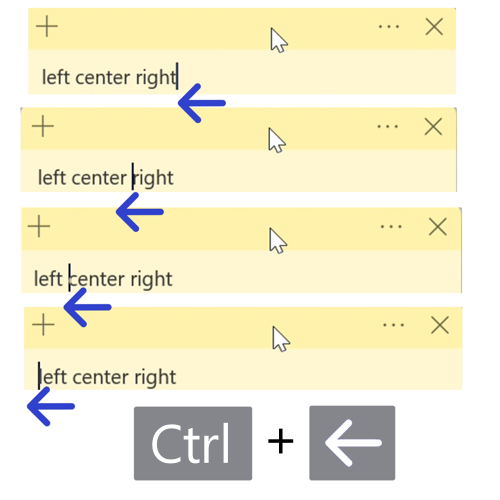
How to Move One Word to the Right
- Step 1: Edit a sticky note. On the keyboard press Ctrl + Right Arrow key to move the insertion point, or blinking vertical line, one word to the right. Continue pressing Ctrl + Right Arrow key to continue moving one word to the right. 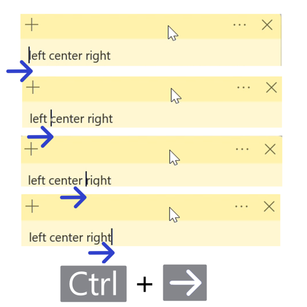
How to Move to the Start of a Line
- Step 1: First edit a sticky note. On the keyboard, press the Home key (some computers accept this shortcut as Fn + Home). The insertion point, or blinking vertical line, jumps to the start of the current line. 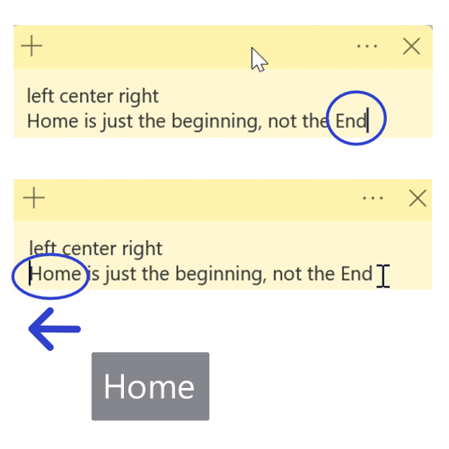
How to Move to the End of a Line
- Step 1: Edit a sticky note. On the keyboard, press the End key (some computers accept this shortcut as Fn + End). The insertion point, or blinking vertical line, jups to the end of the current line. 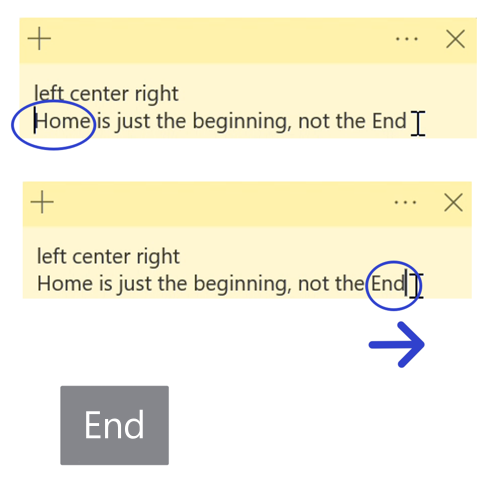
How to Move to the Start of a Sticky Note
- Step 1: First edit a sticky note. On the keyboard press Ctrl + Home (some computers accept this shortcut as Fn + Ctrl + Home in that order). The insertion point, or blinking vertical line, jumps to the start of the sticky note. 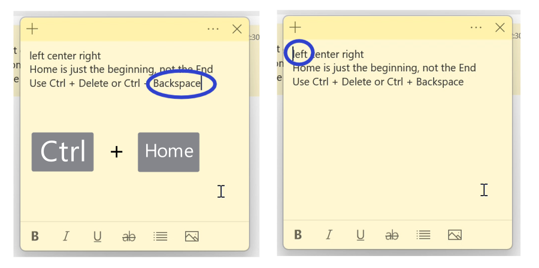
How to Move to the End of a Sticky Note
- Step 1: Edit a sticky note. On the keyboard press Ctrl + End (some computers accept this shortcut as Ctrl + Fn + End). The insertion point, or blinking vertical line, jumps to the end of the sticky note. 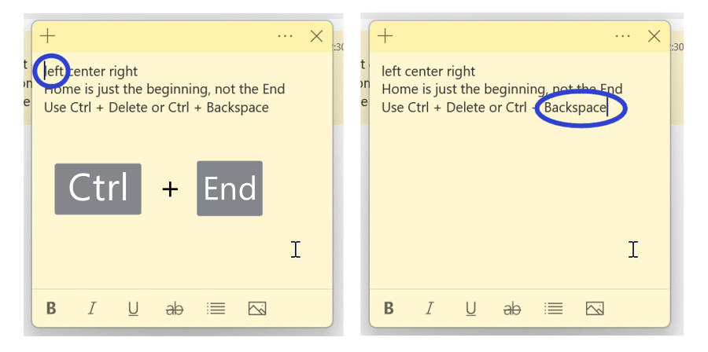
How to Delete the Previous Word
- Step 1: First edit a sticky note. On the keyboard press Ctrl + Backspace to delete the previous word. Continue pressing Ctrl + Backspace to continue deleting the previous word, one at a time. 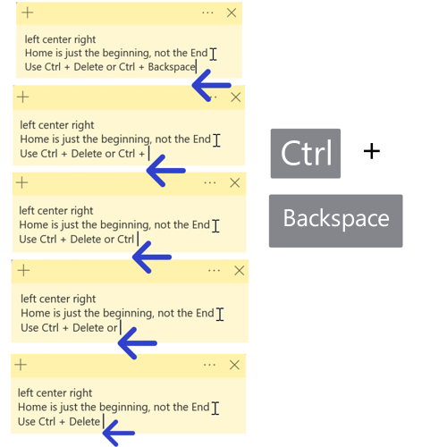
How to Delete the Next Word
- Step 1: Edit a sticky note. On the keyboard press Ctrl + Delete to delete the next word. Continue pressing Ctrl + Delete to continue deleting the next word, one at a time. 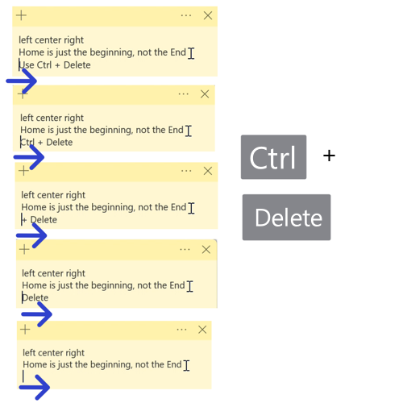
Save these instructions for later with this free tutorial PDF.